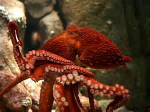

Il polpo
Da non confondere con i polipi (organismi sessili, che costituiscono i coralli) il polpo è un mollusco cefalopode molto diffuso nei bassi fondali, non oltre i 200 metri. Preferisce i substrati aspri, rocciosi, perché ricchi di nascondigli, fessure e piccole caverne in cui nascondersi: l'assenza di endo- ed esoscheletro gli permette di prendere qualsiasi forma, e di passare attraverso cunicoli molto stretti. Presente in tutti i mari e gli oceani, è molto diffuso anche nel Mar Mediterraneo.
È dotato di un "corpo" centrale, dove sono situati gli organi interni, il cervello, gli occhi e la bocca e tutto ciò che rende possibile la sua sopravvivenza ma la sua caratteristica principale sono gli otto arti, dotati di almeno due file di ventose, che usa per esplorare lo spazio circostante, muoversi e nuotare; ciascun braccio contiene praticamente un proprio centro nervoso che dà origine per così dire ad una intelligenza distribuita, un arto infatti può scoprire e reagire all'ambiente corcostante indipendentemente dagli altri.
Sulle nostre tavole come nel suo ambiente naturale è molto apprezzato per la carne e (dai buon gustai) per l'inchiostro che usa solitamente come difesa; ma il polpo è un organismo molto più interessante di quanto si possa immaginare al primo sguardo: infatti sono animali estremamente curiosi e intelligenti, tanto da poter imparare ad aprire barattoli e essere veri e propri maghi della fuga, sono gli unici invertebrati in grado di impiegare stumenti a loro vantaggio in natura, (quando devono muoversi in fondali spogli da protezione tendono a portarsi dietro gusci di cocco in cui nascondersi). Sono grandi imitatori, la maggioranza dei polpi sono in grado di modificare l'aspetto e il colore della loro pelle per confondersi con l'ambiente circostante, per cacciare e nascondersi.